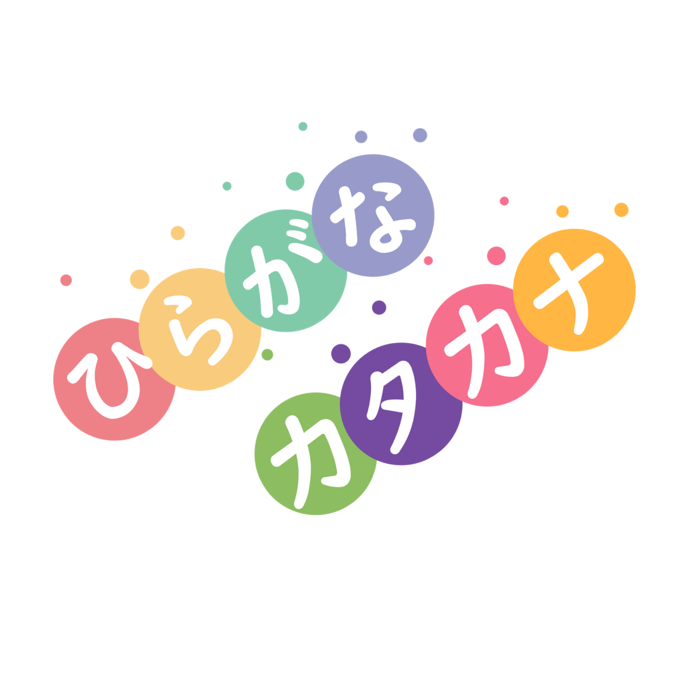

Hiragana (ひらがな、平仮名) adalah satu cara tulisan bahasa Jepun dan mewakili sebutan sukukata. Pada masa silam, ia juga dikenali sebagai onna de (女手) atau 'tulisan wanita' kerana ia biasa digunakan oleh kaum wanita.